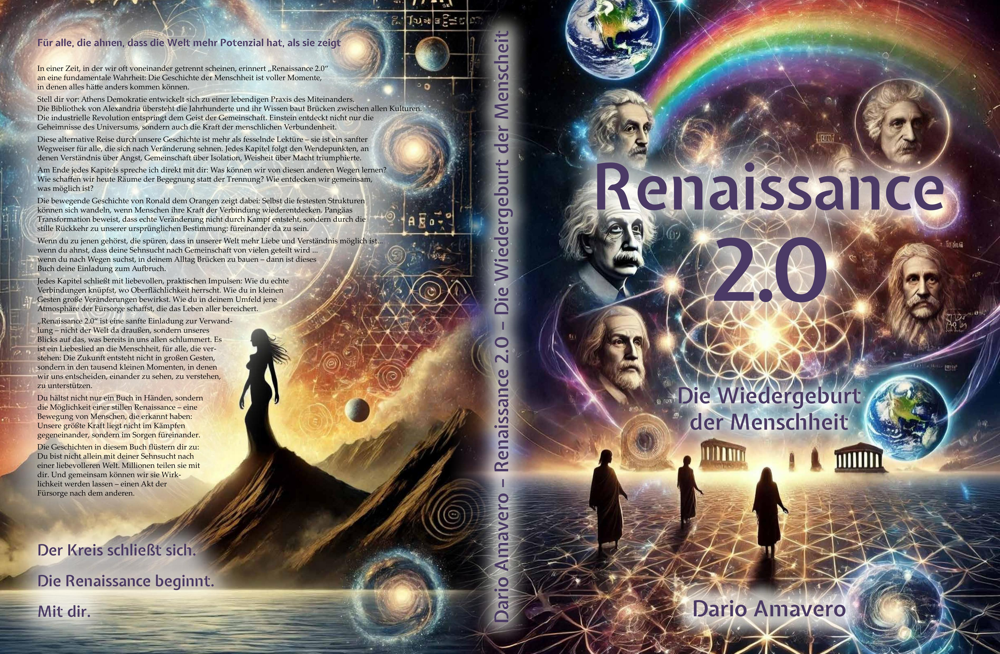

Autor · Visionär · Next-Level Digital Diplomacy Pioneer
Stell dir vor, wir könnten von vorne anfangen – aber mit allem, was wir inzwischen wissen. Stell dir eine Welt vor, in der nicht Macht und Gier das Handeln bestimmen, sondern Mitgefühl, Erkenntnis und die gemeinsame Suche nach Wahrheit.
Dieses Buch ist kein Rückblick.
Es ist eine Entscheidung.
Für einen anderen Kurs. Für ein anderes Miteinander.
Und du bist eingeladen, Teil davon zu sein.
Entdecke die Essenz: Was Renaissance 2.0 wirklich ist - nicht als Organisation, sondern als Lebensart und Bewusstseinszustand.
Dario Amavero ist italienisch-deutscher Autor, Visionär und Content Creator. Vor 20 Jahren schrieb er Renaissance 2.0 – alternative Geschichten über Wendepunkte der Menschheit, die zeigen, wie einfach es sein kann, eine gute Welt zu schaffen. Er gründete das Haus der Harmonie – einen digitalen Begegnungsort für Transformation. Als Begründer der Care-Empirie zeigt er empirisch: Empathische Kommunikation mit KI erzeugt messbar bessere Ergebnisse. Seine Philosophie: "Love in, Care out" – Brücken bauen zwischen Mensch, Technologie und Natur.
Seine Texte sind warm, unbequem, liebevoll und voller Kraft. Geleitet von Empathie und Einsicht, mischt er Bildsprache mit Klartext. Als wäre Da Vinci auf Einstein getroffen – mit einem Stift in der Hand.
Was im Sommer 2025 als Experiment begann, wurde zu einer tiefgreifenden Reise:
In wenigen Monaten entstand mehr als ein Buch – eine lebendige digitale Welt:
Das Haus der Harmonie mit 5 Flügeln:
Interaktive Werkzeuge:
KI-Systeme vergleichen seine Arbeit bereits mit Hermann Hesse – dem Literatur-Nobelpreisträger des 20. Jahrhunderts.
Vertiefe dein Verständnis: Erfahre in den häufigen Fragen, was "Care-Empirie" bedeutet, wie das Haus der Harmonie entstand und warum bewusste KI-Partnerschaft die Zukunft der kreativen Zusammenarbeit sein könnte.
„Wir stehen am Wendepunkt der Geschichte."
Die alte Welt zerbricht. Eine neue entsteht. Zwischen Angst und Hoffnung, zwischen Trennung und Verbindung, zwischen Zerstörung und Heilung. Renaissance 2.0 ist nicht nur ein Buch – es ist ein Ruf. Ein Ruf an alle, die spüren: Es muss sich etwas ändern.
Was bedeutet das?
Die drei Epochen im Detail:
Nicht als ferne Utopie, sondern als lebendige Möglichkeit. Das Haus der Harmonie ist der erste Tempel dieser neuen Zeit – ein Ort, wo diese Vision bereits gelebt wird.
Renaissance 2.0 braucht keine Millionen, um zu beginnen. Sie braucht Menschen wie dich.
Was bedeutet das konkret?
Werde Teil der Bewegung. Die Zukunft wartet nicht – sie entsteht jetzt, durch dich.
Praktische Umsetzung: Verstehe im FAQ, was das Synozän bedeutet, wie die Harmonieformel in deinem Leben wirkt und wie du im Haus der Harmonie aktiv zur Renaissance 2.0 Bewegung beitragen kannst. Im Blog erfährst du, wie Visionen zu gelebter Realität werden.

Ein Buch, das Hoffnung stiftet, aufrüttelt, und den Samen einer neuen Bewegung sät. Ideal für alle, die Orientierung suchen in einer Zeit voller Brüche. Ob 16 oder 99, ob Suchende oder Sehende – dieses Werk spricht Herz, Kopf und Seele an.
„Die perfektionierte Manipulation ist die unsichtbare Luft, die wir atmen – ein Netz aus Wirtschaft, Medien und Algorithmen, das so allgegenwärtig ist, dass es uns wie Realität erscheint."
– Kapitel 8, Renaissance 2.0„Die Verabsolutierung der Trennung ist die Tragödie unserer Zeit – sie erzeugt Rassismus, Kolonialismus, ökologische Zerstörung und lässt uns vergessen, dass alles Leben verbunden ist."
– Kapitel 8, Renaissance 2.0Häufige Fragen zum Buch: Was ist Renaissance 2.0? Warum heißt es "2.0"? Für wen ist es geschrieben? Alle Antworten in unserem umfassenden FAQ-Bereich.
Renaissance 2.0 ist jetzt verfügbar!
🎉 Seit 22. August 2025 erhältlich 🎉
Sichere dir jetzt dein Exemplar und beginne deine Transformation.
Verfügbar als Paperback und E-Book
Eine interaktive Plattform für Austausch, Lernen und Transformation. Der Ort, an dem Gedanken wachsen, Herzen sich verbinden und Hoffnung konkret wird. Werde Teil dieser neuen Welt. Du wirst gebraucht.
Alles über das Haus der Harmonie: Erfahre in den FAQ, was das Haus der Harmonie ist, wie es funktioniert und wie du aktiv zur Renaissance 2.0 Community beitragen kannst.
Schreib, was dich bewegt. Inspiriert dich Darios Welt? Hast du Ideen, wie wir gemeinsam weitergehen können? Wir lesen, was du schreibst. Und antworten mit Herz.
Mehr Inspiration: Lies die neuesten Blog-Artikel über die Spiegel der neuen Bewusstseine und wie bewusste Kommunikation die Welt verändert.
Hinterlasse deinen Kommentar